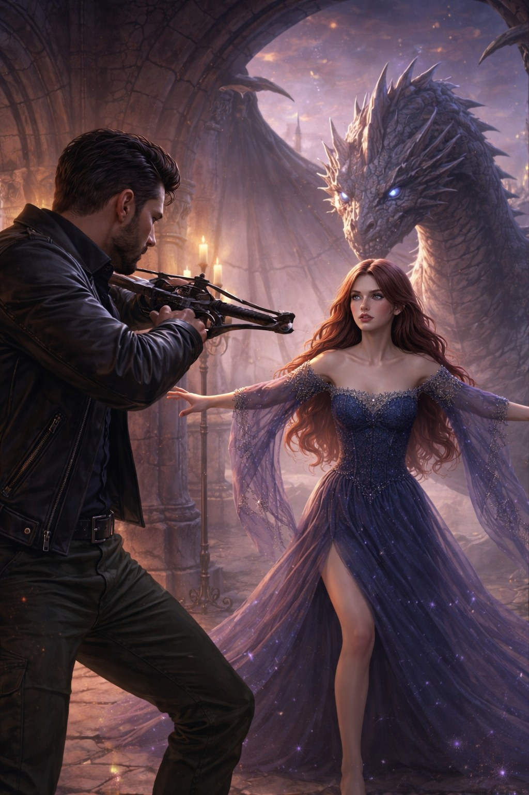

Глава 8
Разлом
Когда в замок приходят настоящие охотники, чувство между Натальей и Робертом перестаёт быть только внутренним — теперь от него зависят жизнь дракона и будущее обоих.
Ночь пришла неожиданно. Не мягко, как раньше, а резко, словно кто-то одним движением погасил свет за окнами.
Наталья проснулась от ощущения, что в воздухе что-то изменилось. В дверь постучали один раз. Коротко. На пороге стоял Роберт.
— Они здесь, — сказал он.
— Кто?
— Охотники.
Они шли по длинному переходу к главному залу молча. Дракон появился рядом почти сразу.
Когда они вошли в зал, там уже были все, кто встречал Наталью в начале.
Раздался глухой удар. Потом ещё один. Тяжёлый, неестественный.
— Они ломают внешние врата, — сказал мужчина из тени.
Наталья посмотрела на дракона и вдруг поняла: она никогда не позволит отдать его. Ни страху, ни приказам, ни тем, кто приходит под видом правоты.
— Нам нужно уходить, — резко сказал Роберт.
— И бежать?
— Это не бегство. Это шанс.
— Для кого?
— Для вас обоих.
Она почувствовала, как внутри поднимается сопротивление.
— Нет.
— Наталья.
— Нет.
Теперь в её голосе было не упрямство, а ясность.
— Я больше не хочу, чтобы всё решали за меня. Не пророчество. Не охотники. Не страх.
— Я пытаюсь сохранить тебе жизнь.
— А ему?
Роберт замолчал.
Удар по вратам повторился.
Наталья сделала шаг и встала рядом с драконом. Не за ним. Рядом.
— Они убьют его, — сказал Роберт тихо.
— Тогда пусть сначала пройдут через меня.
Слова прозвучали так спокойно, что зал словно застыл.
Роберт смотрел на неё, не мигая.
И в его взгляде появилось то, чего она никогда раньше не видела так ясно. Не только страх. Не только боль. Любовь.
— Я не позволю им забрать его. И не позволю тебе снова стать одним из них, — сказала Наталья.
Когда он снова посмотрел на неё, в его лице уже не было прежнего внутреннего разрыва. Была тяжёлая, страшная, но удивительно чистая решимость.
Он медленно снял с плеча оружие и опустил клинок к полу.
— Хорошо, — сказал он. — Если они хотят пройти к нему, им придётся сначала пройти через меня.
В этот момент Наталья поняла: он выбрал не только сторону.
Он выбрал её.